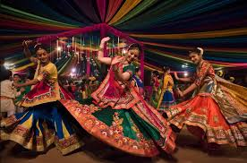

Exploring India's Culture and Heritage
Classical Dance Forms of India
Garba is a traditional folk dance from the state of Gujarat, performed predominantly during the Navratri festival, which celebrates the divine feminine energy. Rooted in Hindu religious tradition, Garba is dedicated to Goddess Durga and her various forms.
Garba is a traditional folk dance from the state of Gujarat, performed predominantly during the Navratri festival, which celebrates the divine feminine energy. Rooted in Hindu religious tradition, Garba is dedicated to Goddess Durga and her various forms.
The origins of Garba can be traced back to ancient temple rituals in Gujarat, where it began as a devotional performance to honor Durga and Amba, goddesses representing strength and protection. Over time, it evolved into a more organized and celebratory form of dance, performed in village courtyards and temple grounds. As it became more popular, Garba began incorporating folk elements, costumes, and music that reflected the local culture. Today, Garba stands as a living tradition that blends religion, celebration, and community spirit.
Garba is typically performed in large circles or spirals, with dancers moving rhythmically to the beat of traditional music, clapping hands or using dandiya sticks in a coordinated pattern. The dance is set to folk songs, devotional music, or modern Garba tracks played on instruments like the dhol, tabla, harmonium, and shehnai. The dancers, dressed in colorful traditional attire, move in graceful yet energetic steps, which increase in speed as the music intensifies. Men usually wear kediyu and dhoti, while women wear chaniya choli, adorned with mirror work, embroidery, and jewelry.
Garba is more than just a dance; it is a devotional act that connects the dancer with the divine feminine energy. Traditionally, a lamp (garbha deep) or an image of the Goddess is placed at the center of the circle, symbolizing the eternal source of life, and dancers revolve around it to show reverence. The circular movement signifies the cycle of life, birth, and death, and the dance itself becomes a spiritual offering. It is a celebration of Shakti (power) and is also a powerful symbol of community bonding and cultural identity.